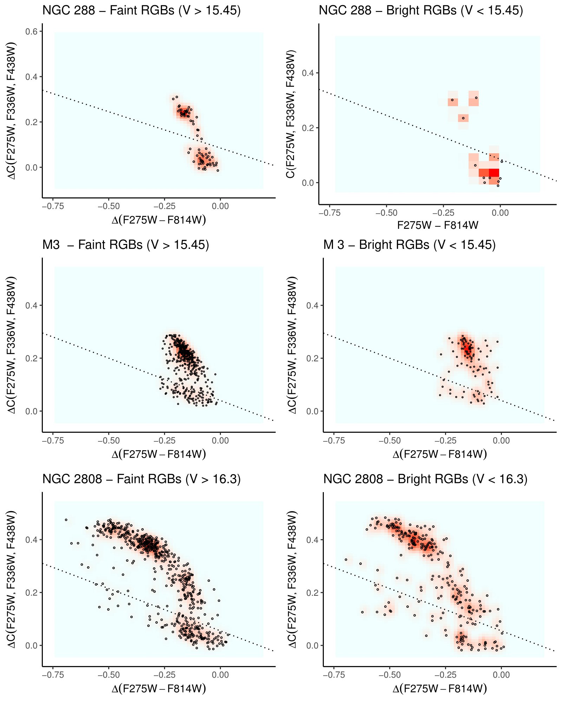
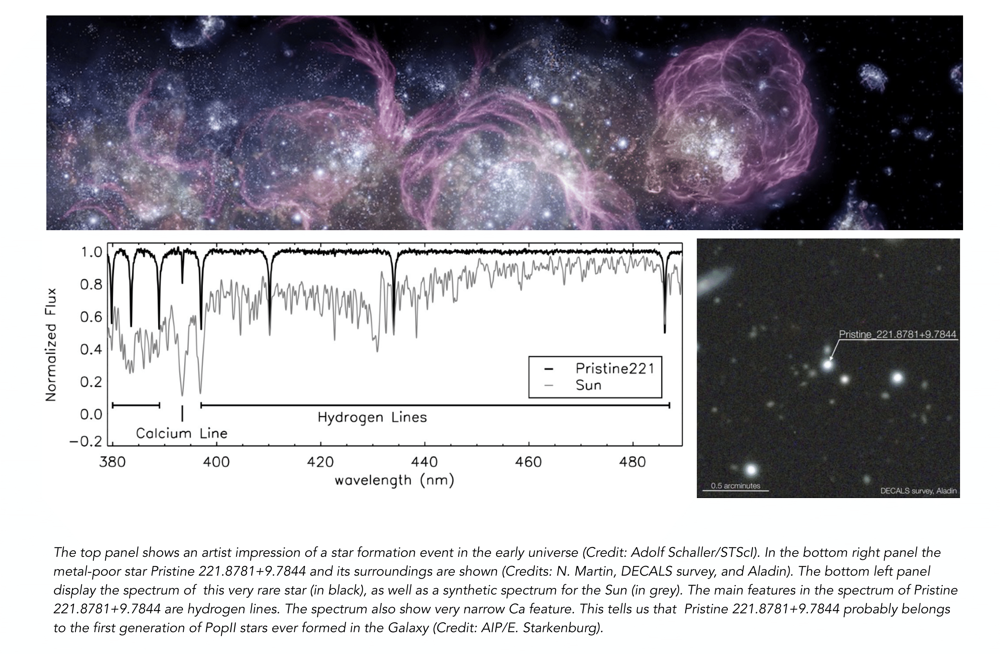
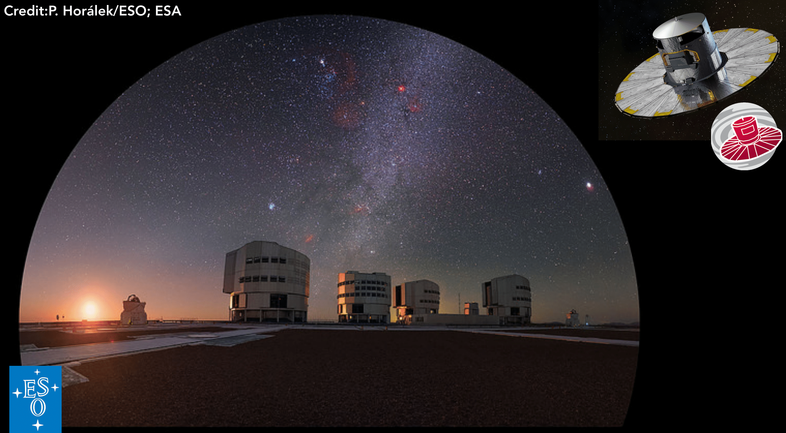
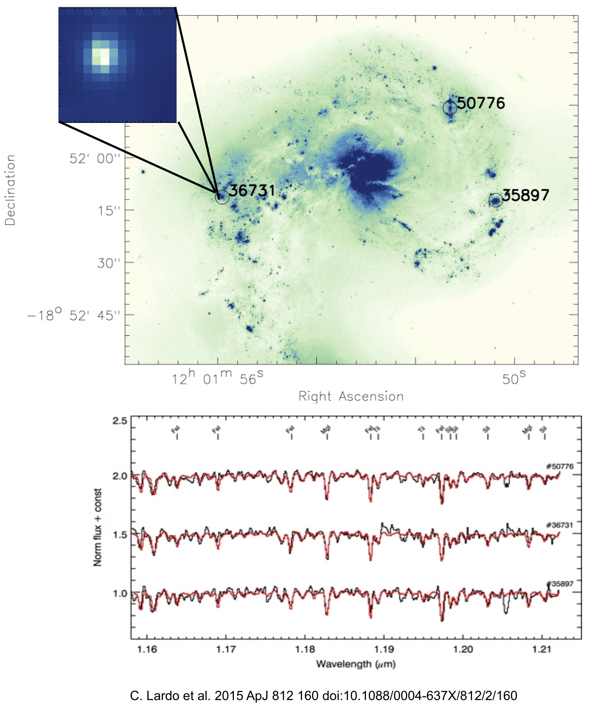

My research interests cover a wide range of topics in the fields of galaxy formation, stellar evolution, stellar spectroscopy, and stellar populations.

The discovery that globular clusters (GCs) do not fit within the traditional picture of being composed by stars with the same age and chemical abundances within some small tolerance has led to a growing interest in cluster studies. GCs host multiple populations (MPs) of stars with spreads in He and many other light elements (namely C, N, O, Na, Al, Mg). Several formation scenarios have been proposed to explain the chemical MPs, but none of them is able to entirely reproduce observations. The origin of this phenomenon is arguably the largest open question within the GC community at present and it is unlikely that most of the questions about GC formation and evolution will be answered without a new insight on MPs.
A critical discussion of the state-of-the-art of the MP studies can be found in the review “Multiple Stellar Populations in Globular Clusters” that appeared in Volume 56 of Annual Reviews of Astronomy & Astrophysics (Bastian and Lardo, 2018).
Some Selected Publications:
Bastian, N.; Usher, C.; Kamann, S.; Lardo, C.; Larsen, S. S.; Cabrera-Ziri, I.; Chantereau, W, et al. 2019, MNRAS, 489L, 80B
Cabrera-Ziri, I.; Lardo, C.; Mucciarelli, A., MNRAS, 485, 4128C
Martocchia, S.; Dalessandro, E.; Lardo, C, et al. 2019, MNRAS, 487, 5324M
Hollyhead, K.; Martocchia, S.;Lardo, C.; et al. 2019, MNRAS, 484, 4718H
Bastian, N. & Lardo, C., 2018 ARA&A..56…83B
Lardo, C., et al., 2018A&A, 616A, 168L
Lardo, C., et al., 2017MNRAS, 468, 2482L
Lardo, C., et al, 2016, MNRAS, 457, 51L
Bastian, N. & Lardo, C., 2015, MNRAS, 453, 357B
Lardo, C. et al, 2011, A&A, 525A, 114L
Long-lived extremely metal-poor (EMP, with [Fe/H]\(\leq 3\)) stars in the Local Group allow to investigate the initial stages of the cosmic history in great detail. Indeed, they represent reachable probes of first stages of the enrichment of the primordial Universe, complementing direct studies of high-redshift galaxies.

In a typical high latitude field, only one in \(\sim 80\ 000\) stars has [Fe/H]\(\leq -4\) dex (Youakim et al., 2017) and less than 20 stars with [Fe/H] \(\leq 4.5\) dex are known (Christlieb et al., 2002; Frebel et al., 2005; Caffau et al., 2011; Keller et al., 2014; Bonifacio et al., 2015; Aguado et al., 2018a,b). The photometric survey Pristine has been especially designed to identify EMPs in a efficient manner (Starkenburg et al., 2017). Pristine builds on the combination of the CaH&K filter and the wide field of MegaCam at CFHT, to. yield a pre-selection of EMPs that is \(\sim 5\) times better than previous surveys. Low- and high-resolution spectroscopic follow-ups of selected metal-poor stars are then parformed to accomplish the full potential of Pristine. On low-resolution spectrographs, large numbers of stars can be quickly surveyed and Fe and C abundances measured. The most promising candidates with [Fe/H] \(\leq -3\) are selected to be observed with high-resolution spectrographs to study their detailed abundance patterns.
Pristine has already started to deliver outstanding results with the discovery of a very special object, Pristine 221.8781+9.7844 (Starkenburg et al., 2018). This object is among the ten most metal-poor stars known and it is one out of two outstanding stars that do not show carbon enhancement (the other is SDSS J102915+172927; see Caffau et al. 2011). Its formation was probably triggered by a single primordial supernova event, thus this discovery is crucial to understand star formation at high redshift and the properties of the first supernovae.
IN THE PRESS:
École Polytechnique Fédérale de Lausanne; Leibniz Institute for Astrophysics Potsdam; University of Victoria; Observatoire de Paris.
Some Selected Publications:
Aguado, D. S.; Youakim, K.; González Hernández, J. I.; …; Lardo, C, et al. 2019, MNRAS.tmp.2271A
Bonifacio, P.; Caffau, E.; Sestito, F.; Lardo, C., et al. 2019, MNRAS, 487, 3797B
Starkenburg, E. et al. 2018, MNRAS, 481, 3838S
 The main goal of the Gaia space mission is to depict a position and space velocity map of the Galaxy, by surveying more than one billion stars in the Milky Way. While Gaia will provide radial velocities, the magnitude limit is much brighter than that of the astrometry and the precision is much below that of proper motions. The Gaia-ESO survey (e.g. Gilmore et al., 2012) completes the information provided by Gaia yielding radial velocities and stellar abundances for stars that are too faint for Gaia???s spectrometer.
For the past five year, I was involved in the calibration of the Gaia-ESO spectroscopic data. Calibrations are critical for large surveys like Gaia-ESO, where a wide variety of stellar populations are observed and results from several different analysis techniques are considered.
Some Selected Publications:
Lardo, C., et al., 2015, A&A, 573A, 115L
Pancino, E., Lardo, C., et al., 2017, A&A, 598A, 5P

Most of our information about the metallicity in distant galaxies relies on the analysis of strong HII-region emission lines. However, such an analysis is known to be subject to large systematic errors (e.g., > 0.5 dex depending on the calibration used) that need to be better understood and quantified.
The J-band technique allows to avoid such systematic issues by performing low-resolution spectroscopy in the near-IR of bright red supergiant stars (e.g. Davies et al., 2010). This technique has also been successfully applied to unresolved young (10-100 Myr) massive (\(>10^5M_{\odot}\)) super-star clusters (SSCs), for which the integrated J-band light is dominated by RSGs. In Lardo et al. (2015, 2017b) we directly measured abundances in three SSCs located at more than 20 Mpc from us in the Antennae galaxies. Compiling this study with other recent work (Davies et al., 2017) we constructed a mass-metallicity relation for nearby galaxies based entirely on individual stars (i.e. not relying on nebular emission lines), providing the benchmark against which all future extragalactic abundance work can be calibrated.
Some Selected Publications:
Lardo, C., et al., 2015ApJ, 812, 160L
Davies, B., et al., 2017ApJ, 847, 112D